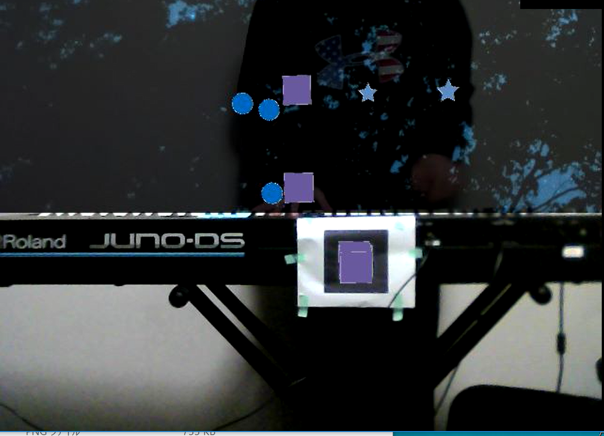
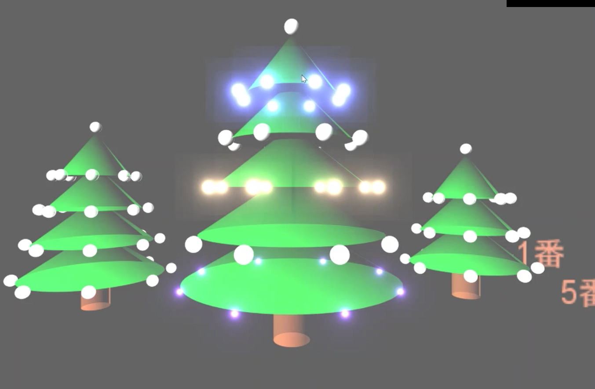
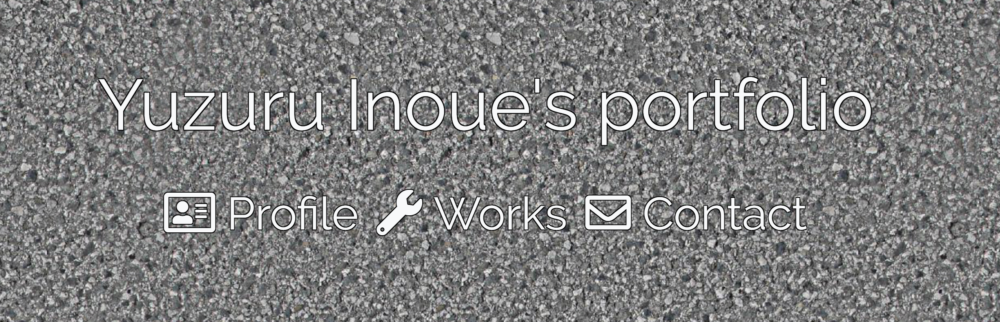

Profile
- 名前 : 井上 弦(ゆづる)
- 学校 : 明治大学
- 学部 : 総合数理学部
- 学科 : 先端メディアサイエンス学科
- 学年 : 三年生
- 研究室 : 五十嵐研究室
- 資格 : CGエンジニア, CGクリエイター検定 エキスパート取得
プログラミング
「ピアノプロジェクション」
説明：弾いた鍵盤、その強さに応じてARでエフェクトを発生させる。Processingで実装。
url：https://youtu.be/BunRBE-y3ZU
「イルミネーション」

説明：Twitterを使用し、特定のハッシュタグで「n番」（nが数字）という文字列が入ったツイートをすると、その番号に応じた球が画像のように光るシステム。
三人一組のグループ制作課題。筆者は、Twitterから特定のハッシュタグの、「n番」という文字列を取得し、ニコニコ動画のように背景に流し、球の配列番号に対応させる部分を担当した。
Processingで実装。
url：https://youtu.be/8t6j4Wu_7zI
映像制作
説明：1分程度の映像を作るという課題で制作。After Effectを使用。
url：https://youtu.be/QEjrFw7BHxU
web制作
説明：当サイト。CSSフレームワークはBootstrapを使用。